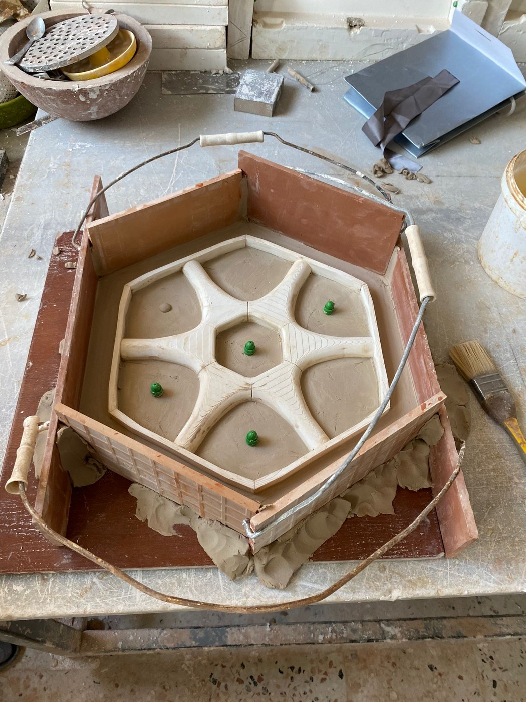
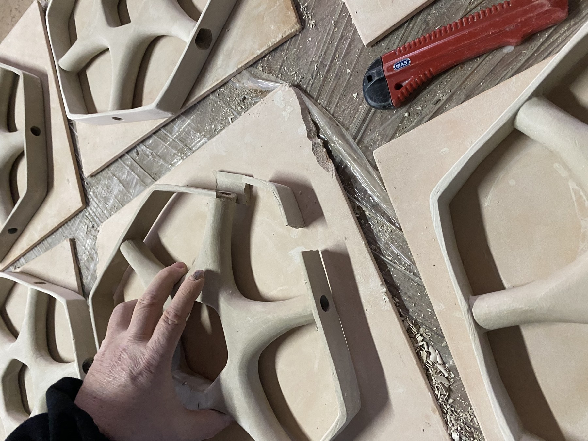
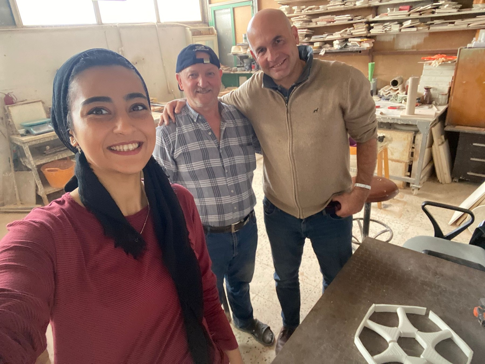
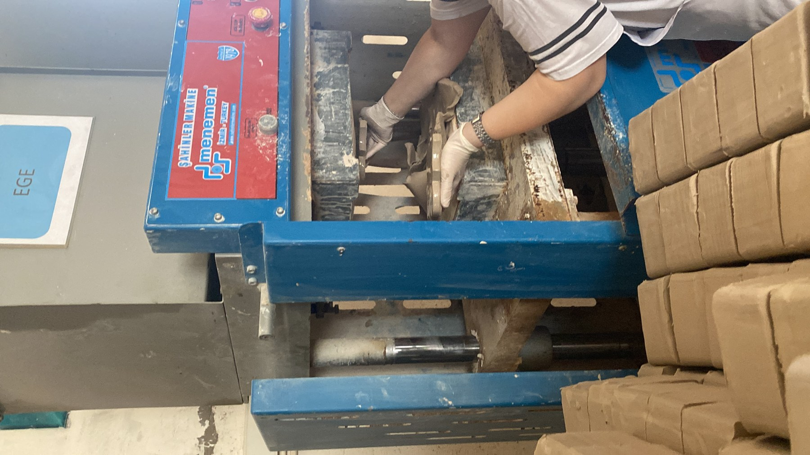
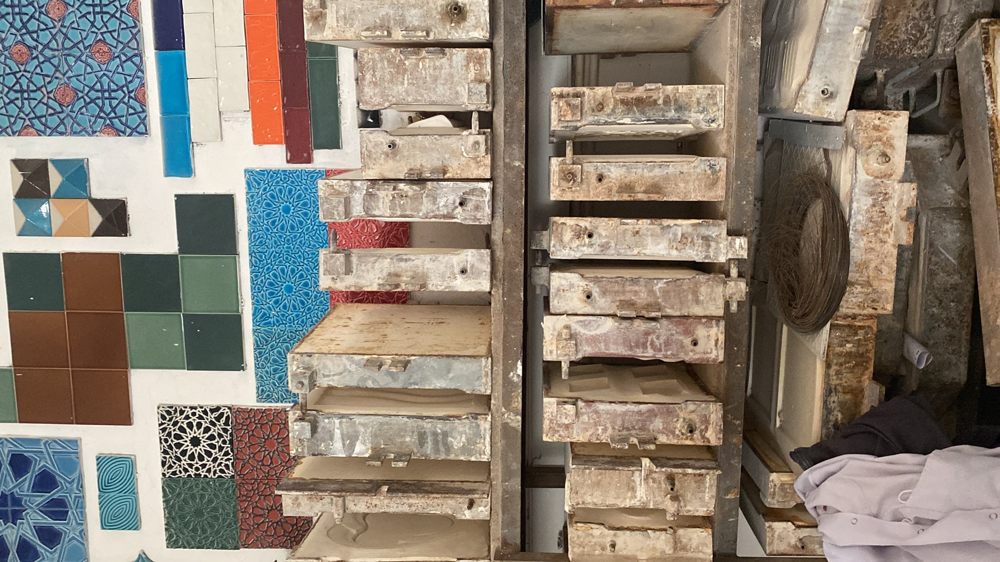
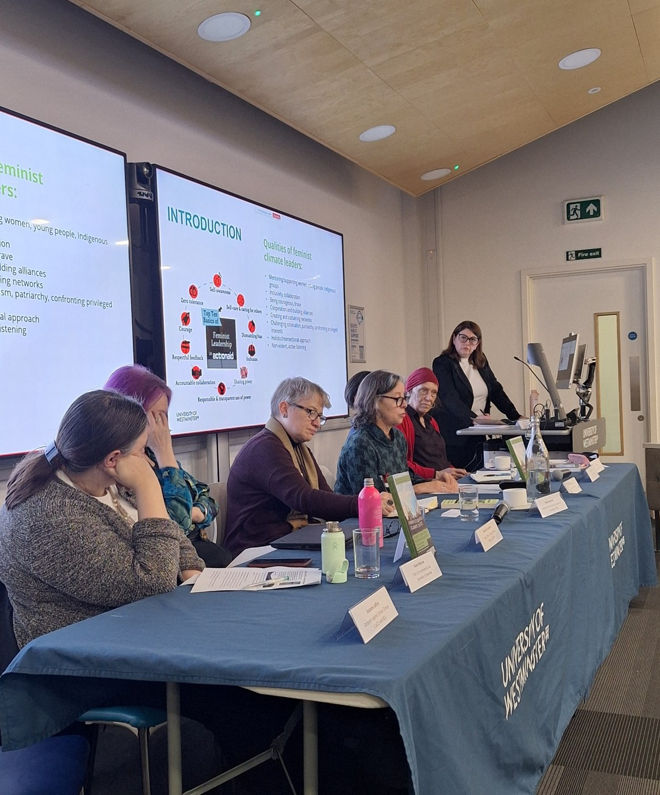

Architecture & environmental design
Investigating how architectural form, climate and cultural context shape the performance of buildings and places.
Architect · Academic · Researcher
I am Dr Rofayda Salem, an architect and environmental-design researcher investigating how traditional architectural knowledge can shape more climate-responsive futures.
My work brings Mashrabiya research into dialogue with passive cooling, material experimentation, ceramic craft and building performance.

01 — Profile
I explore the environmental intelligence held in traditional architecture—and how it can be reinterpreted through contemporary design and making.
My doctoral research developed a ceramic evaporative cooling screen inspired by the Mashrabiya. It combined archival and craft research with environmental analysis, material experimentation, prototyping and performance testing.
Across research, teaching and practice, I work between historical collections and living craft knowledge, connecting cultural context with building performance and climate-responsive design.
University of Westminster profile02 — Research
I bring architectural history, environmental performance and material practice into the same conversation.
Investigating how architectural form, climate and cultural context shape the performance of buildings and places.
Re-reading the Mashrabiya as a climate-responsive system of shade, airflow, privacy, material and craft.
Developing and testing porous ceramic screens that combine solar shading with evaporative cooling potential.
Working with artisans, prototypes and environmental tests to translate research questions into material evidence.
Heritage for the future
Historical collections and living craft knowledge can help shape more thoughtful climate futures—when heritage is treated as active environmental knowledge.
Methods & tools
Archival and craft fieldwork · comparative architectural analysis · environmental simulation · material experimentation · prototype fabrication · environmental monitoring · wind-tunnel testing
Software: ClimateStudio, Ladybug Tools, Honeybee, TAS, ENVI-met, Eddy3D / CFD, Galapagos, Rhino and Python.
03 — Selected work
From material trials to collaborative research, each project connects design questions to lived environments.

A Mashrabiya-inspired screen that brings patterned shading together with porous ceramic evaporation. The research combines craft knowledge, simulation, full-scale prototyping, environmental monitoring and wind-tunnel testing.
Read the research
Workshop visits and conversations document fabrication knowledge, materials and the craft decisions behind Mashrabiya-inspired ceramic prototypes.

Full-scale making connected screen geometry and porosity with contemporary ceramic production and performance testing.
Environmental design contribution to passive systems for testing laboratories, a microclimate courtyard and façade approaches informed by traditional clay construction.
Visit the museum website
A study of traditional perforated screens and how pattern, orientation and geometry influence shading and natural ventilation.
Read the PLEA 2020 proceedings
Research contributing evidence and resources to improve women’s participation and equality across construction, wood and forestry.
Explore ProBEResearch following the environmental and craft histories carried by architectural collections, and considering how that knowledge can inform future climate-responsive design.
See the British Library public talk04 — Scholarship
Rofayda Salem, Rosa Schiano-Phan and Juan Vallejo
Shared work on Mashrabiya, passive cooling and environmental design, and celebrated postgraduate research.
Rofayda Salem and Rosa Schiano-Phan · PLEA 2020 proceedings
Public talk on traditional environmental knowledge and contemporary passive design.
Conference participation and developing research are shared on LinkedIn and ResearchGate.
05 — Academic practice
Supporting the next generation of designers through technical learning, environmental analysis and research-led teaching.
University of Westminster
Research: Mashrabiya in passive cooling and the development of an innovative ceramic evaporative screen.
University of Westminster
Research on the environmental performance of Mashrabiya, recognised with the MC2019 Best Paper Award.
British Library
Research on traditional architectural knowledge, craft heritage, archival histories and passive environmental design.
University of Westminster
Research, environmental analysis, dissemination and collaborative academic projects in architecture and environmental design.
University of Westminster
Teaching environmental design, technical workshops, building-performance analysis and simulation tools across BSc and MSc programmes.
ProBE · University of Westminster
Contributing evidence and resources that support women’s participation and equality across the construction sector.
06 — Recognition
Awards and commendations recognising research and design achievement.
“Reimagining the Mashrabiya: A Ceramic Evaporative Cooling Screen for Hot-Arid Climates”
Research on the environmental performance of the traditional Mashrabiya.
Recognition for technical achievement.
Commendation.
07 — In collaboration
Selected excerpts from academic and professional references.
“Rofayda has always shown great dedication to teaching and research, which she delivers with enthusiasm and commitment.”
“Rofayda has been collaborating with us at NG Architects for several years and has become an essential and trusted partner in our work.”
08 — Get in touch
For research, teaching, speaking and collaboration enquiries, please get in touch.